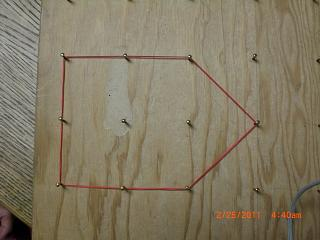
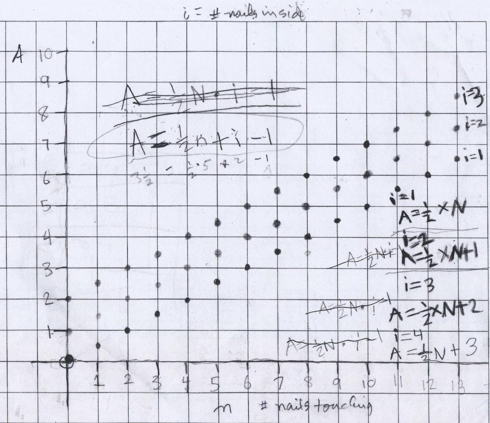

I found a formula to find the area of shapes on a geoboard, then graphed it in 2D and 3D
by Irisa, a 6th grader
An example of a shape that I made on a geoboard is the pentagon
below. It has 2 nails
inside not touching the rubberband (called i), and 8 nails touching the
rubberband (called n). The area was 5.

I made different shapes with a different number of nails inside each time on the geoboard. I did it with 1, 2, and 3 nails inside. Then I had to calculate the area on a graph and found a formula for how to figure out the area for each shape by calculating number of nail touching (n).

For the 1 nail inside (i=1), I got the area calculation formula as ½n (½ of the number of nails touching). For the 2 nails inside (i=2), I got ½n+1, and for the 3 nails inside (i=3), I got as ½n+2. I noticed that the more nails inside, the more you add to ½n. After that I made a guess for 4 nails inside. The guess I made was ½n+3.
Next I had to find the area with i (nails inside) in the formula. I got ½n* i-1 the first time but it was incorrect so I tried again. I got A = ½n + i - 1 which is correct. For the formula, I always had to add or subtract to ½n to get the correct area calculation. The pattern on the graph for the area was a straight line no matter how many nails were inside or how many nails were touching.
Then Mr. Cohen got out the 3D graphing board and I graphed A = ½n + i - 1. n was like the x-axis, i was like the y-axis, and A came up like the z-axis. The rubberbands tied around the top of the rods where the plotted points. Can you see the patterns in this graph?
Fine job, Irisa!!!